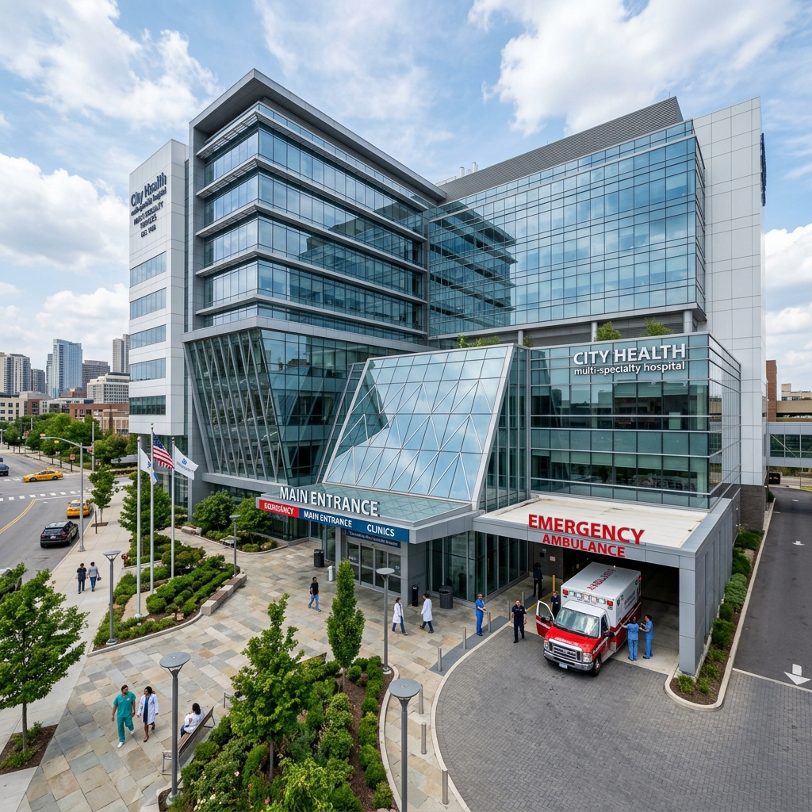
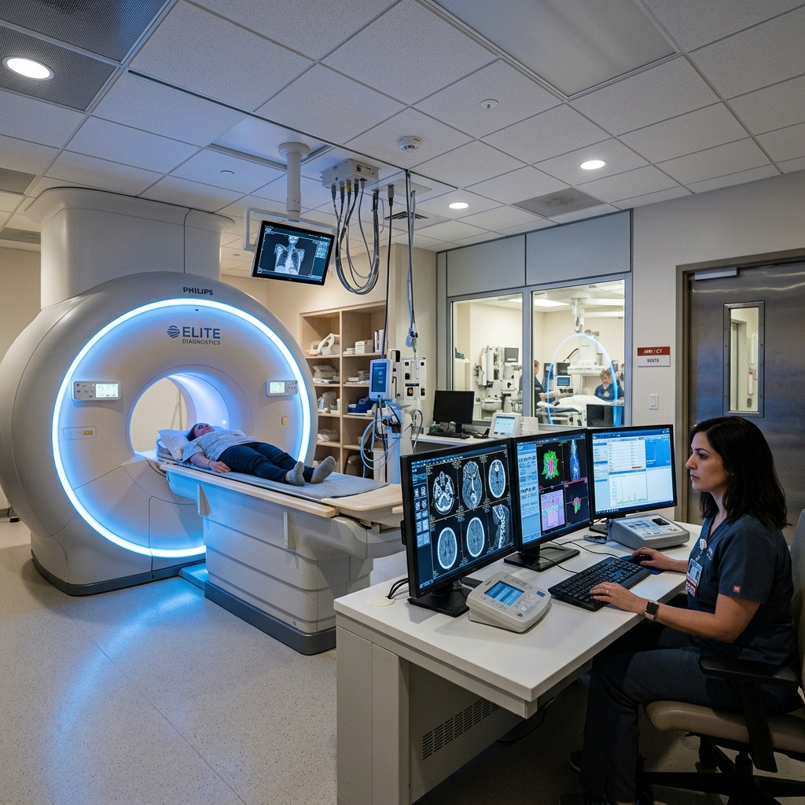
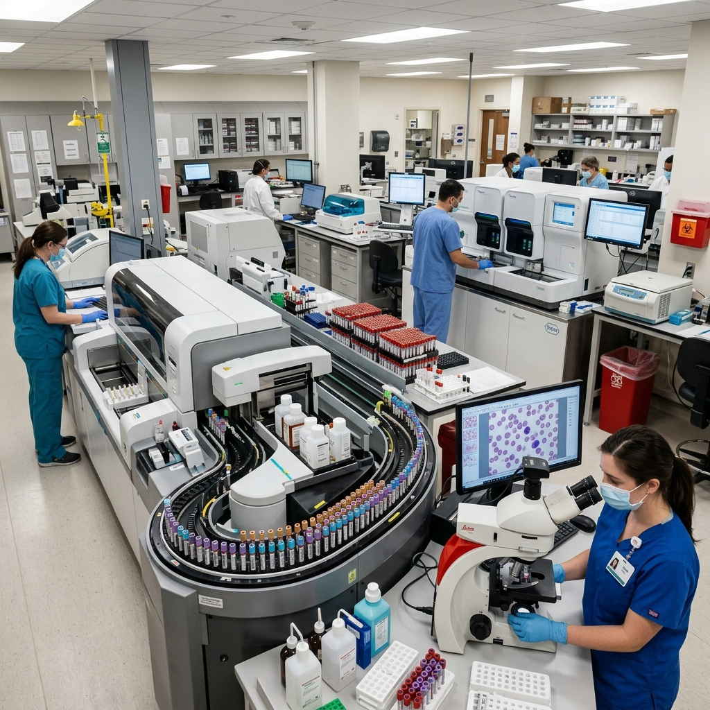
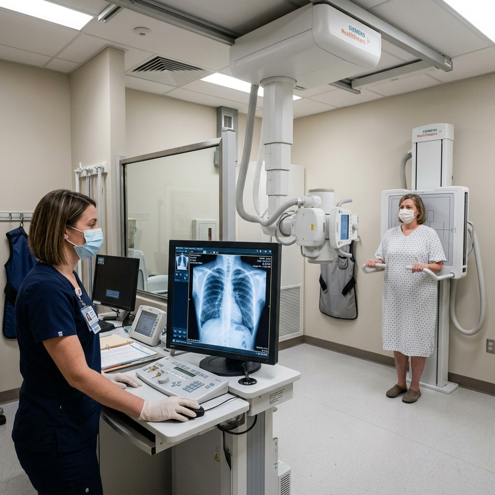
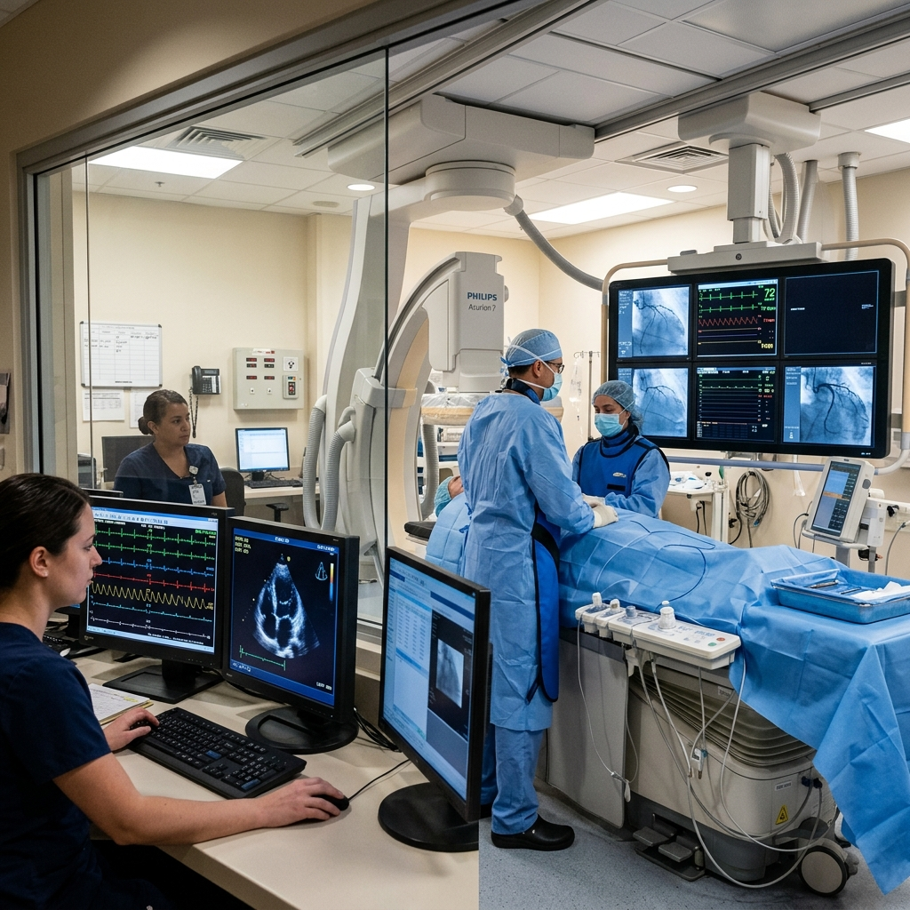
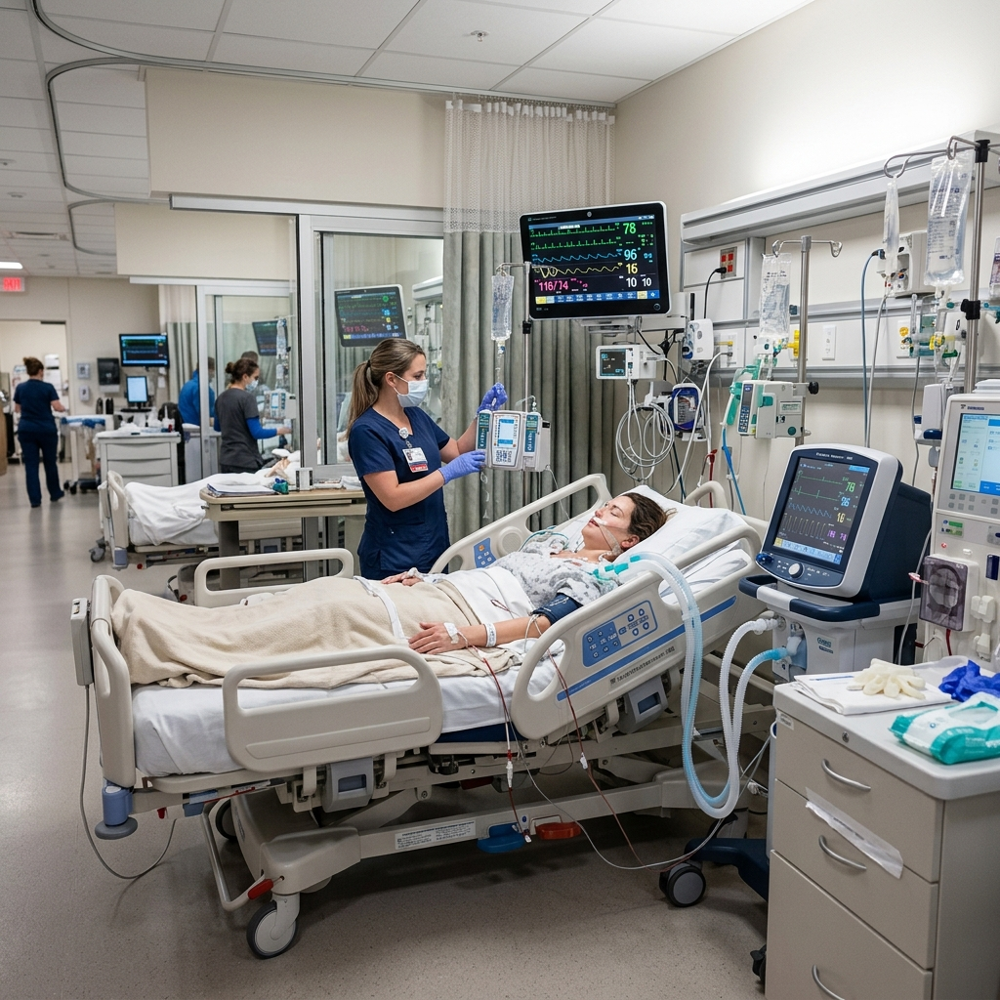

Patient Digital Records
Seamless online registration, automated unique ID assignment (`PAT-...`), prescription archives, and encrypted diagnostic history.
Streamline patient registration, doctor consultations, 3T MRI & pathology diagnostics, specialist queues, and encrypted digital health records in one unified system.

Integrated workflow solutions for patients, medical staff, and administrative teams.
Seamless online registration, automated unique ID assignment (`PAT-...`), prescription archives, and encrypted diagnostic history.
Real-time doctor appointment booking, queue status updates, automated slot confirmation, and instant check-in.
Manage doctor duty rosters, clinical note entry, diagnostic test orders, and digital prescriptions (`DOC-...`).
Automated invoice generation, itemized consultation & diagnostic test billing, and insurance claim tracking.
Precision diagnostic technologies for accurate medical evaluation and early detection.

24/7 ScanningSub-millimeter 3D imaging for brain, spine, joint, and cardiac angiography with AI-assisted clarity.
Schedule Scan →
ISO AccreditedRobotic automated hematology, liver/kidney panels, hormone bio-assays, and biopsy histopathology.
Book Blood Test →
Ultra-Low RadiationFull-body digital radiograph, DEXA bone density scans, and orthopedic stress imaging with instant cloud delivery.
Book Radiology →
Cath Lab ReadyColor Doppler Echocardiography, Holter 24-hr monitoring, TMT Treadmill stress test & coronary catheterization.
Book Cardiac Test →Renowned medical practitioners dedicated to patient-centered clinical excellence.
Senior Cardiology Specialist
14+ Yrs Exp • MD, DM Cardiology (AIIMS)
📍 Room 102 • OPD: Mon - Sat (9 AM - 4 PM)
Book ConsultationNeurology & Stroke Specialist
11+ Yrs Exp • MD, DM Neurology
📍 Room 204 • OPD: Mon - Fri (10 AM - 5 PM)
Book ConsultationPediatrics & Child Care Chief
9+ Yrs Exp • MD Pediatrics, DCH
📍 Child Care Wing 108 • OPD: Daily (8 AM - 2 PM)
Book ConsultationOrthopedics & Joint Surgeon
12+ Yrs Exp • MS Ortho, MCh (Spine)
📍 Surgery Block B • OPD: Mon, Wed, Fri (11 AM - 6 PM)
Book ConsultationModern medical infrastructure designed for maximum safety, comfort, and critical recovery.

Built according to international clinical protocols with sterile airflow systems and round-the-clock emergency preparedness.
Immediate triage, resuscitation bays, and emergency surgical teams.
Ultra-clean laminar air flow surgical suites with HD laparoscopic units.
24/7 medicine dispensing and temperature-controlled blood bank.
Ergonomic electric beds, nurse call buttons, and patient family amenities.
Hear from real patients who experienced our compassionate clinical care and digital management.
"Extremely smooth OPD queue management! Dr. Rajesh Sharma diagnosed my cardiac symptoms promptly and saved valuable time during emergency triage."
"The 3T MRI report was synced directly to my patient dashboard within 2 hours. High-tech equipment and wonderful, attentive nursing staff!"
"Clean hospital suites, fast digital registration, and transparent billing. Dr. Priya Sundaram's knee surgery procedure gave me complete mobility."
Quick answers to common questions about appointments, diagnostics, and emergency care.
You can easily book online by creating an account or logging into the Portal. Select your preferred doctor, pick an available OPD time slot, and receive instant confirmation with your unique Patient ID.
Routine pathology blood tests and digital X-rays are synced to your online patient dashboard within 2 to 4 hours. Special MRI and CT scans are verified by senior radiologists within 4 to 6 hours.
Call our 24/7 Emergency Line immediately at +91 98765 43210. Our Level-1 Trauma Center and emergency resuscitation team are active 24 hours a day, 365 days a year.
Yes, our TPA Insurance Desk supports hassle-free cashless claims with over 30+ major healthcare insurance providers for both planned surgeries and emergency hospital admissions.
Reliable cloud infrastructure compliant with modern patient privacy standards.
Full data encryption for patient diagnostics, prescription history, and billing records.
Instant date & cryptographically generated identifiers (`PAT-...`, `DOC-...`) for tracking.
Seamless responsive access on desktop monitors, clinical tablets, and mobile devices.
Emergency Hotline: +91 98765 43210 (24/7)
OPD Appointment Desk: +91 98765 12345
Email Desk: care@gurushospital.com
Location: Plot 42, Medical Zone Avenue, City Center, Metro City
OPD Timings: Mon - Sat: 8:00 AM - 8:00 PM | Sun Emergency Only
Secure login portals for registered patients, doctors, and clinical care staff.